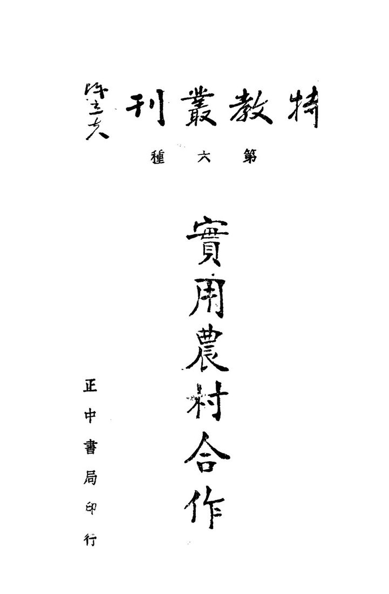
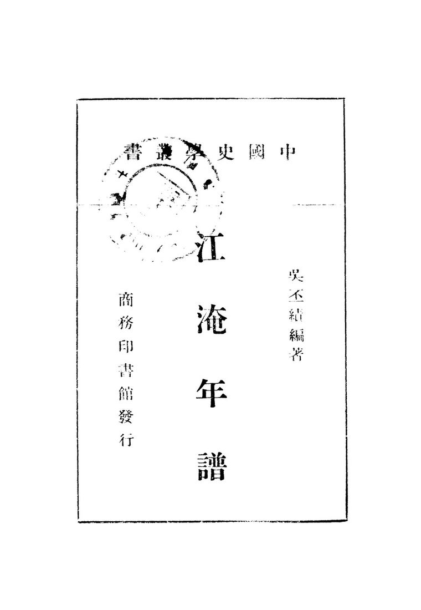
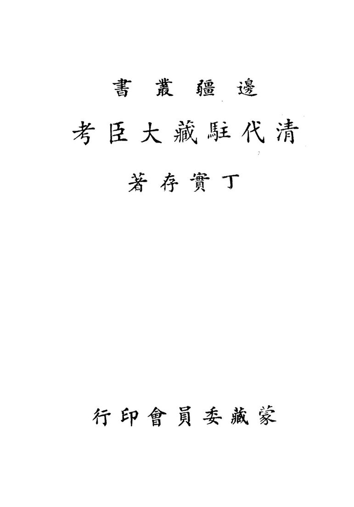
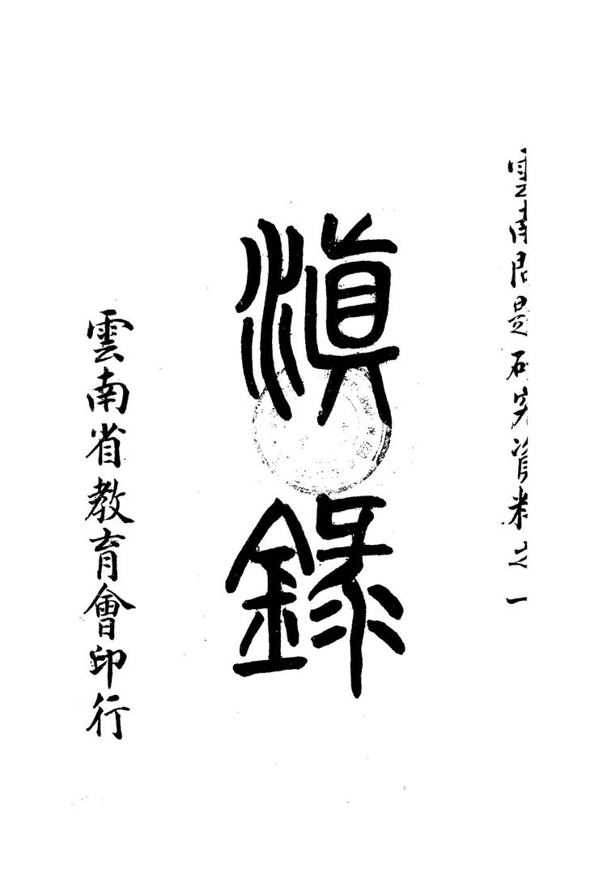
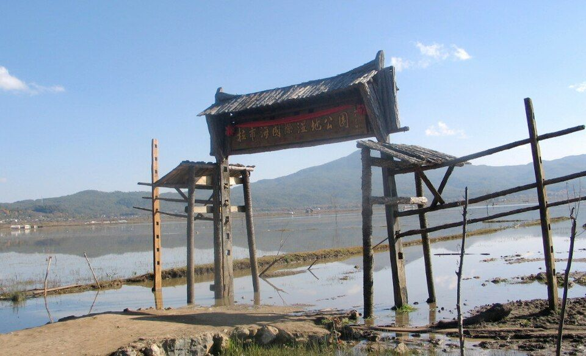
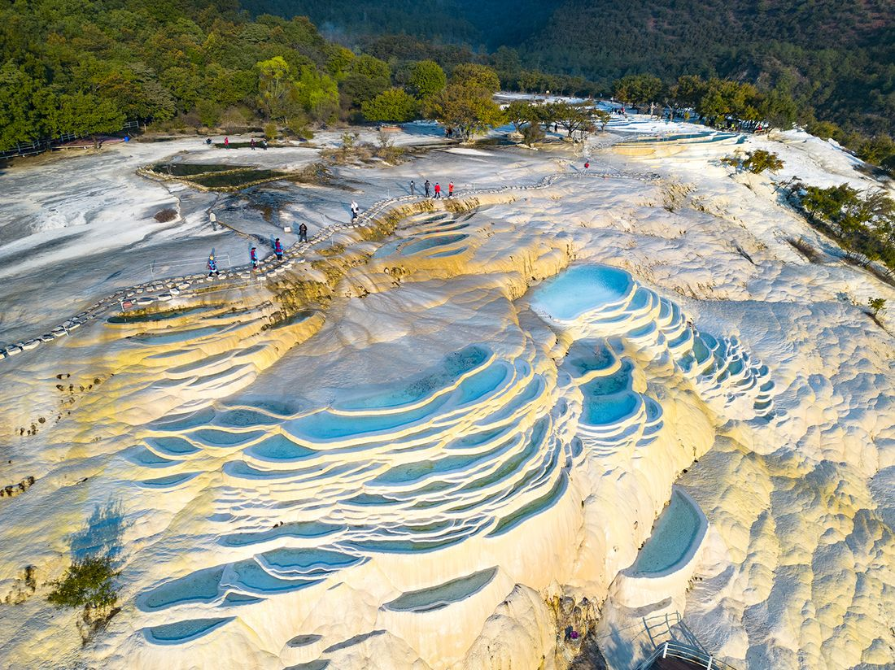

先看结论
-
丽江适合的玩法
- 古城人文线丽江古城、大水车、四方街、木府、狮子山万古楼、黑龙潭、忠义市场
- 雪山自然线玉龙雪山、冰川公园、蓝月谷、云杉坪、牦牛坪、甘海子、东巴谷、玉湖村
- 古镇慢游线束河古镇、白沙古镇、白沙壁画、茶马古道博物馆、文海村、玉湖村
- 湖泊湿地线拉市海、泸沽湖、大落水、里格半岛、女神湾、草海走婚桥
- 徒步峡谷线虎跳峡、上虎跳、中虎跳徒步、茶马客栈、金沙江峡谷
- 纳西文化线东巴文化博物馆、玉水寨、白沙壁画、木府、纳西古乐、东巴纸坊
- 吃喝街区线忠义市场、七星街、花马街、古城小巷、束河小店、白沙咖啡
-
必去优先级
- 第一梯队丽江古城、玉龙雪山、蓝月谷、白沙古镇、束河古镇、黑龙潭、忠义市场
- 第二梯队木府、狮子山万古楼、云杉坪、牦牛坪、玉湖村、东巴谷、拉市海、虎跳峡
- 时间多再去泸沽湖、文海村、玉水寨、白沙壁画、茶马古道博物馆、老君山、长江第一湾、宝山石头城
- 亲子优先玉龙雪山低强度线、蓝月谷、东巴文化博物馆、黑龙潭、拉市海、泸沽湖
-
平台高频玩法
- 小红书风格白沙古镇咖啡看雪山、玉湖村石头房、黑龙潭雪山倒影、蓝月谷蓝水、云杉坪草甸、丽江古城夜景、忠义市场早餐
- B 站 Vlog 风格丽江古城慢逛、白沙咖啡、玉龙雪山一日、虎跳峡徒步、泸沽湖两日、忠义市场吃小吃
- 抖音路线风格古城大水车、木府、狮子山、黑龙潭、白沙古镇、玉湖村、蓝月谷、云杉坪、雪山日照金山
-
游玩原则
- 丽江不要只住古城商业主街，白沙和束河更适合慢住
- 玉龙雪山票务复杂，景区门票、索道票、景区交通、演出、电瓶车是分开的
- 雪山和虎跳峡强依赖天气，风大、雨雪、塌方、索道停运时不要硬去
- 泸沽湖离丽江市区很远，至少留 2 天 1 晚
- 古城、束河、白沙商业化程度不同，想安静优先白沙/束河外围
快速决策索引
全年月份速查
季节限定景观
景点营业时间和票价速查
-
使用说明
- 以下为常见开放时间和成人基础票价，节假日、索道、演出、观光车、游船、特展会调整
- 丽江古城、束河、白沙、泸沽湖、玉龙雪山相关政策变化较多，出发前以官方平台为准
- 开放式街区、市场、古镇公共道路多为免费，店铺、院落、停车、骑马、游船另计
-
丽江古城和周边
- 丽江古城/大研古城开放式古城，全天可逛；古城维护费常见 50 元/人次，有效期 365 天，具体征收和免缴情形以丽江市规定为准
- 四方街/大水车/酒吧街/五一街/七一街：开放式街区，免费逛；店铺按各自营业
- 木府/丽江古城博物院常见 8:30-17:30，成人票常见 40 元左右；以官方购票页为准
- 狮子山万古楼常见 8:30-18:00，成人票常见 35 元左右；以景区公告为准
- 黑龙潭公园常见 7:30-21:30 左右；常与古城维护费/景区管理政策关联，具体以现场公告为准
- 东巴文化博物馆/丽江市博物院常见 9:00-17:00 或 8:30-17:30，免费或低价参观以馆方公告为准
- 忠义市场本地市场，清晨到中午更热闹，免费；摊位按各自营业
-
束河、白沙、玉湖
- 束河古镇开放式古镇，全天可逛；古城维护费政策适用范围以官方规定为准，店铺按各自营业
- 茶马古道博物馆常见 9:00-17:30，票价和开放以馆方/束河景区公告为准
- 白沙古镇开放式古镇，全天可逛；古城维护费政策适用范围以官方规定为准，店铺按各自营业
- 白沙壁画常见 8:30-17:30，成人票常见 20 元左右；以景区公告为准
- 玉湖村开放式村寨，免费或村寨维护/停车以现场公告为准；骑马、咖啡、民宿另计
- 文海村开放式高原村落，免费；骑马/餐饮/住宿按商家收费
-
玉龙雪山片区
- 玉龙雪山景区常见 7:00-18:00，旺季/节假日可能提前至 6:00 入园；景区进山费常见 100 元
- 冰川公园索道索道票常见 140 元左右，需提前预约；运营受风雪和天气影响
- 云杉坪索道索道票常见 60 元左右，需预约；适合轻松雪山草甸线
- 牦牛坪索道索道票常见 65 元左右，需预约；适合高原牧场视角
- 蓝月谷在玉龙雪山景区内，通常随进山费进入；电瓶车常见 50 元左右，自愿消费
- 甘海子在玉龙雪山景区内，常作换乘和观景点
- 东巴谷常见全天开放或白天开放；部分区域可免费远眺雪山，景区项目以现场公告为准
- 玉水寨常见 8:00-18:00，成人票常见 50 元左右；以官方购票页为准
- 印象丽江演出场次和票价随季节调整，常见票价 280 元左右，以官方购票页为准
-
拉市海和周边
- 拉市海湿地开放和收费按各湿地/马场/会所不同，观鸟区域、骑马、划船、茶马古道项目需分别问清
- 指云寺常见白天开放，免费或低价入寺以现场公告为准
-
泸沽湖
- 泸沽湖景区环湖开放式游览为主，云南宁蒗片区门票常见 50 元；四川片区票务另行管理
- 猪槽船按码头和线路收费，常见几十元到百元不等
- 里格半岛/大落水/女神湾/草海走婚桥：开放式湖区村落/观景点，通常免费；停车、游船、餐饮另计
- 摩梭家访/篝火晚会按当地项目收费，价格和内容先问清
-
虎跳峡和远郊
- 虎跳峡景区常见 7:30-16:30 或 8:00-16:00，成人票常见 45 元；丽江段/香格里拉段和徒步入口需分清
- 中虎跳徒步村道/徒步路线，部分栈道或天梯由当地维护收费，强天气依赖
- 长江第一湾开放式观景点，免费或停车/观景台低价收费以现场为准
- 老君山黎明景区常见白天开放，门票和观光车以景区公告为准
- 宝山石头城开放式古村寨属性较强，交通远，收费和开放以现场公告为准
- 千龟山老君山片区景点，门票和开放以官方公告为准
-
演艺和商业
- 丽江千古情演出场次和票价按日期变化，常见成人票 280 元左右，以宋城官方购票页为准
- 丽江古城酒吧/咖啡店按各店营业
- 雪山景观咖啡馆按各店营业和最低消费规则
行前准备
-
预约和核对
- 玉龙雪山进山票、索道票、景区交通、演出票分开看；大索道提前抢
- 泸沽湖确认电子门票、环湖交通、住宿位置和返程车
- 虎跳峡确认徒步路况、塌方、客栈、返程车
- 古城维护费看当年征收规则、适用范围和免缴情形
- 博物馆/木府/黑龙潭看开放、预约和闭馆
-
穿搭和装备
- 全年防晒霜、帽子、墨镜、舒适防滑鞋
- 玉龙雪山保暖外套、手套、帽子，氧气按身体情况准备
- 虎跳峡徒步鞋、雨具、轻装背包、现金少量备用
- 泸沽湖早晚冷，湖边风大，带外套
- 古城石板路不适合拉大箱子走很远
-
高反和安全
- 丽江古城海拔约 2400 米，多数人可适应；玉龙雪山大索道上站海拔高，谨慎冲刺
- 初到第一天别喝太多酒、别剧烈运动
- 高海拔不适时及时下撤，不要硬撑
住宿建议
-
丽江古城/大研古城
- 适合第一次来、夜晚逛古城、吃喝方便、交通集中
- 优点景点密集，餐饮多，去木府、黑龙潭、忠义市场方便
- 缺点商业化、人多、石板路拖箱子累，热门区域夜晚吵
- 关键词南门、忠义市场、五一街、七一街、四方街外围
-
束河古镇
- 适合想安静、慢住、带父母、避开大研人流
- 优点比大研安静，餐饮和民宿成熟，去白沙/雪山方向方便
- 缺点夜生活不如大研
-
白沙古镇
- 适合雪山景观、咖啡、慢生活、年轻人拍照
- 优点能看雪山，街区气质更松弛
- 缺点热门后价格上涨，旺季小街拥堵
-
玉湖村/文海村
- 适合雪山脚下、村落、拍照、安静住宿
- 优点自然感强，适合慢游
- 缺点交通和餐饮不如古城方便
-
丽江站/客运站周边
- 适合赶高铁/大巴、预算型住宿
- 优点交通方便
- 缺点旅行氛围弱
-
泸沽湖
- 大落水交通和餐饮方便，第一次去稳妥
- 里格景观经典，住宿紧俏
- 女神湾/蒗放日落和安静感更强，交通相对不便
地图分区
-
大研古城片区
- 核心点丽江古城、四方街、大水车、木府、狮子山、忠义市场、黑龙潭
- 玩法古城夜景、吃喝、博物馆、雪山倒影
-
束河白沙片区
- 核心点束河古镇、茶马古道博物馆、白沙古镇、白沙壁画、玉湖村、文海村
- 玩法慢住、咖啡、雪山、纳西村落
-
玉龙雪山片区
- 核心点冰川公园、蓝月谷、云杉坪、牦牛坪、甘海子、东巴谷、玉水寨、印象丽江
- 玩法雪山、索道、草甸、蓝水、日照金山
-
拉市海片区
- 核心点拉市海湿地、茶马古道骑马、指云寺
- 玩法观鸟、骑马、湿地
-
泸沽湖片区
- 核心点大落水、里格半岛、女神湾、草海走婚桥、洛洼码头、格姆女神山
- 玩法环湖、船、日出日落、摩梭文化
-
虎跳峡/香格里拉方向
- 核心点虎跳峡、上虎跳、中虎跳、高路徒步、长江第一湾
- 玩法峡谷、徒步、金沙江、雪山
核心景点
-
来源图 丽江古城游玩攻略最佳时间：全年，早晨安静，晚上热闹；看点：四方街、大水车、纳西院落、小桥流水、夜景- 最佳时间全年，早晨安静，晚上热闹
- 看点四方街、大水车、纳西院落、小桥流水、夜景
- 玩法早晨走小巷，晚上看灯火，不只逛主街
- 搭配木府、狮子山、忠义市场、黑龙潭
- 值不值得专程第一次来值得；之后可作为住宿和吃喝 base
- 提醒商业化强，消费前问价格
-
木府
- 最佳时间白天
- 看点木氏土司府衙、纳西历史、古城视角
- 搭配丽江古城、狮子山、四方街
- 值不值得专程喜欢历史建筑值得
-
狮子山万古楼
- 最佳时间傍晚前后
- 看点俯瞰丽江古城和雪山方向
- 搭配木府、古城
-
黑龙潭公园
- 最佳时间晴天早晨
- 看点雪山倒影、得月楼、五孔桥、东巴文化博物馆
- 搭配丽江古城、东巴文化博物馆
- 值不值得专程天气好值得
-

开放图库 忠义市场游玩攻略最佳时间：早上；看点：本地市场、水果、菌子、小吃、纳西生活气- 最佳时间早上
- 看点本地市场、水果、菌子、小吃、纳西生活气
- 可吃鸡豆凉粉、丽江粑粑、米线、包浆豆腐、水果
- 值不值得专程喜欢市场和吃早餐值得
-

开放图库 束河古镇游玩攻略最佳时间：上午和傍晚；看点：茶马古道、九鼎龙潭、青龙桥、小店和民宿- 最佳时间上午和傍晚
- 看点茶马古道、九鼎龙潭、青龙桥、小店和民宿
- 搭配白沙、茶马古道博物馆
- 值不值得专程值得，比大研更适合慢逛
-

开放图库 白沙古镇游玩攻略最佳时间：晴天上午到下午；看点：雪山街景、纳西村落、咖啡、白沙壁画- 最佳时间晴天上午到下午
- 看点雪山街景、纳西村落、咖啡、白沙壁画
- 搭配玉湖村、束河、雪山线
- 值不值得专程值得，丽江慢游核心
-
玉湖村
- 最佳时间晴天上午或傍晚
- 看点雪山脚下石头村、洛克旧居、村落和草甸
- 搭配白沙、东巴谷、玉龙雪山
- 值不值得专程喜欢村落和雪山视角值得
-
玉龙雪山
- 最佳时间11 月至次年 5 月看雪山概率更高，全年都可去
- 看点冰川公园、蓝月谷、云杉坪、牦牛坪、甘海子
- 玩法大索道冲冰川，云杉坪轻松草甸，牦牛坪开阔牧场
- 搭配白沙、玉湖村、东巴谷
- 值不值得专程值得，丽江自然核心
- 提醒索道票提前抢，高反量力而行
-
蓝月谷
- 最佳时间晴天
- 看点蓝色湖水、雪山背景、白水河
- 搭配玉龙雪山索道线
- 值不值得专程通常作为雪山一日游组成部分
-
云杉坪
- 最佳时间5-10 月草甸，冬季看雪山背景
- 看点森林、草甸、雪山
- 适合不想上高海拔冰川的人
-
牦牛坪
- 最佳时间5-10 月草甸，秋冬看雪山
- 看点高原牧场、雪山侧面、开阔视野
- 提醒风大，交通更折腾
-

开放图库 东巴谷游玩攻略最佳时间：晴天早晨看日照金山；看点：雪山远景、东巴文化、谷地景观- 最佳时间晴天早晨看日照金山
- 看点雪山远景、东巴文化、谷地景观
- 玩法作为玉龙雪山轻量替代或补充
-

开放图库 拉市海游玩攻略最佳时间：冬季候鸟，春秋湿地；看点：湿地、候鸟、骑马、茶马古道体验- 最佳时间冬季候鸟，春秋湿地
- 看点湿地、候鸟、骑马、茶马古道体验
- 提醒骑马/划船价格差异大，避免被临时推销
-
泸沽湖
- 最佳时间10 月至次年 5 月晴天
- 看点湖泊、摩梭文化、里格半岛、女神湾、草海走婚桥
- 玩法环湖、猪槽船、住湖边、看日出日落
- 值不值得专程值得，但至少 2 天 1 晚
-

来源图 虎跳峡游玩攻略最佳时间：3-5 月、9-11 月；看点：金沙江峡谷、玉龙雪山和哈巴雪山夹峙、徒步- 最佳时间3-5 月、9-11 月
- 看点金沙江峡谷、玉龙雪山和哈巴雪山夹峙、徒步
- 玩法上虎跳半日观景，中虎跳/高路徒步 1-2 天
- 值不值得专程喜欢徒步和峡谷非常值得
- 提醒雨季风险高，先看路况
街区、夜市和市场
-
丽江古城四方街/五一街/七一街
- 最佳时间下午到晚上
- 可吃鸡豆凉粉、丽江粑粑、烤饵块、纳西烤鱼、酒吧小吃
- 提醒主街价格偏高，进店前看菜单
-
开放图库 忠义市场游玩攻略最佳时间：早上到中午- 最佳时间早上到中午
- 可吃米线、包子、鸡豆凉粉、水果、菌子、腊排骨
- 适合早餐和买水果
-
束河小街
- 最佳时间上午和傍晚
- 可吃咖啡、简餐、纳西菜、牦牛肉
-
白沙古镇主街
- 最佳时间晴天上午到下午
- 可吃雪山咖啡、面包甜品、纳西菜、牦牛肉火锅
- 提醒雪山景观店有溢价
-
花马街/七星街
- 最佳时间晚饭和夜宵
- 可吃腊排骨火锅、黑山羊火锅、烧烤、小吃
-
泸沽湖村落小街
- 最佳时间傍晚
- 可吃湖鱼、摩梭家常菜、烧烤、酥油茶
美食总表
-
必吃主食和小吃
- 丽江粑粑甜咸两种，适合早餐和加餐
- 鸡豆凉粉丽江代表小吃，可凉拌可煎
- 纳西烤鱼古城和束河常见
- 米灌肠纳西特色，口味接受度看个人
- 包浆豆腐夜市和市场常见
- 烤饵块/烤乳扇云南常见小吃
- 酥油茶高原风味，适合雪山和藏餐
-
火锅和正餐
- 腊排骨火锅丽江代表，花马街和古城周边常见
- 黑山羊火锅秋冬适合
- 牦牛肉火锅雪山和白沙方向常见
- 纳西火塘适合多人晚饭
- 土鸡火锅
- 菌子火锅夏秋季节，必须煮透
- 三文鱼/雪山鱼玉龙雪山冷水鱼方向，按兴趣选择
-
纳西菜和地方菜
- 纳西烤肉
- 水性杨花
- 吹肝
- 腊肉炒野菜
- 东巴烤肉
- 泸沽湖湖鱼
- 摩梭猪膘肉
-
饮品和甜品
- 雪山咖啡
- 酥油茶
- 牦牛酸奶
- 鲜花饼
- 云南咖啡
- 梅子酒/青梅酒
-
伴手礼
- 鲜花饼
- 东巴纸/东巴文字文创
- 普洱茶/滇红
- 牦牛肉干
- 菌菇制品
- 纳西刺绣/披肩
- 银器玉石谨慎购买，先做功课
餐厅和店铺
-
阿婆腊排骨
- 类型腊排骨火锅
- 适合第一次吃丽江腊排骨
- 提醒同名/相似店多，确认门店和评价
-
云雪丽餐厅
- 类型云南菜/纳西菜
- 适合古城附近正餐
-
和叔食府
- 类型纳西菜/云南菜
- 适合多人正餐
-
滇西王子
- 类型云南菜连锁
- 适合想吃稳定一点的云南菜
-
88 号小吃店
- 类型丽江小吃
- 适合鸡豆凉粉、丽江粑粑、小吃拼盘
-
花马街腊排骨/黑山羊店
- 类型火锅
- 适合住古城外或想避开主街时
-
白沙雪山咖啡店
- 类型咖啡/面包/拍照
- 适合晴天看雪山
- 提醒先看当天云量，不要为雪山视野盲排队
-
忠义市场小吃摊
- 类型早餐/小吃/水果
- 适合早上吃本地味
-
泸沽湖湖边餐馆
- 类型摩梭家常菜/湖鱼/烧烤
- 适合住湖边时就近吃
博物馆和展馆
-
来源图 东巴文化博物馆/丽江市博物院游玩攻略时间：1.5-2.5 小时；搭配：黑龙潭- 类型地方综合和东巴文化专题
- 重点东巴文字、纳西民俗、东巴经、丽江三项世界遗产
- 时间1.5-2.5 小时
- 搭配黑龙潭
-
木府/丽江古城博物院
- 类型土司府衙和古城历史
- 重点木氏土司、纳西建筑、丽江古城格局
- 搭配大研古城、狮子山
-
茶马古道博物馆
- 类型茶马古道专题
- 重点束河、马帮、普洱茶贸易、滇藏通道
- 搭配束河古镇
-
白沙壁画
- 类型宗教艺术和历史壁画
- 重点明代壁画、汉藏纳西文化融合
- 搭配白沙古镇
-
洛克故居/玉湖村相关展陈
- 类型历史人物和村落展陈
- 重点约瑟夫·洛克、纳西村落和雪山文化
自然、远郊和周边
-
泸沽湖
- 适合湖泊、摩梭文化、慢住、摄影
- 时间2-3 天更合适
- 提醒丽江往返路程长，不建议当天往返
-
来源图 虎跳峡游玩攻略时间：上虎跳半天，高路徒步 2 天；提醒：徒步强度和风险都高于普通景点- 适合峡谷、徒步、金沙江、雪山
- 时间上虎跳半天，高路徒步 2 天
- 提醒徒步强度和风险都高于普通景点
-
老君山
- 适合丹霞、森林、高山草甸、徒步
- 时间1-2 天
- 提醒交通和开放以景区公告为准
-
长江第一湾/石鼓镇
- 适合顺路看金沙江大转弯、红色历史
- 搭配虎跳峡或香格里拉方向
-
宝山石头城
- 适合小众村寨、金沙江峡谷、摄影
- 时间1-2 天，自驾/包车更合适
-
文海村
- 适合高原村落、花草、雪山远景、慢住
- 提醒道路和天气影响明显
-
开放图库 拉市海游玩攻略提醒：商业项目多，提前问价- 适合湿地、候鸟、骑马、轻度郊游
- 提醒商业项目多，提前问价
路线模板
远郊一日游决策
交通细节
-
到达丽江
- 丽江站高铁/动车主要到达站，去古城打车或公交
- 丽江三义机场到古城、束河、白沙需要机场巴士/打车
- 大理到丽江动车约 1.5-2 小时，自驾/包车约 2.5-3.5 小时
-
市区移动
- 古城内以步行为主，石板路拖箱子累
- 大研、束河、白沙之间打车较方便
- 去白沙/玉湖村/雪山方向可打车、公交或包车
-
去玉龙雪山
- 公交、景区专线、拼车、包车都可
- 旺季优先官方购票和正规交通，不要临时信低价团
-
去泸沽湖
- 常见为旅游专线/大巴/包车，路程长
- 注意返程时间和山路晕车
-
去虎跳峡
- 可丽江客运站/旅游大巴/拼车前往
- 徒步终点和返程点提前和客栈/司机确认
避坑和取舍
-
不要低估玉龙雪山票务复杂度
- 进山费、索道、景区车、蓝月谷电瓶车、演出都是不同项目
-
不要高反硬撑
- 头痛、胸闷、明显不适就下撤
-
不要雨季硬走虎跳峡徒步
- 塌方、落石、泥路风险真实存在
-
不要只在古城主街吃饭买东西
- 主街商业化强，忠义市场和古城外围更接地气
-
不要被低价拉市海骑马团套路
- 路线、时长、是否含船、是否进购物点都要问清
-
不要把泸沽湖安排成一天往返
- 车程长，体验差
-
不要在雪山买过多一次性氧气和租衣服
- 按身体和天气判断，正规点购买
-
不要忽视紫外线
- 丽江海拔高，阴天也晒
-
不要在古城拖大箱子走很远
- 住宿尽量选车能到附近的位置
出发前复核清单
来源参考
-
玉龙雪山官方票务和游览提示
- https//www.lijiang.cn/article/172717.html
- https//www.yn.xinhuanet.com/20260427/056b9de46d7e422992c1aa13d7a4b773/c.html
- https//www.yasotravel.com/phone/spots/show_2053.html
- https//lj.bendibao.com/jingdian/yulongxueshan/
-
丽江古城维护费和古城信息
- https//travel.cnr.cn/dj/20250718/t20250718_527269265.shtml
- https//finance.sina.cn/2025-07-18/detail-inffwpwt6553599.d.html
-
泸沽湖景区
- https//www.lijiang.cn/article/172169.html
- https//finance.sina.com.cn/roll/2025-12-20/doc-inhckerx5457702.shtml
- https//youletour.com/yunnan/lu-gu-hu/goupiao
-
虎跳峡
- https//www.xgllhtx.cn/news_1/35.html
- https//poicn.com/zh/china/lijiang/tiger-leaping-gorge/
- https//www.elanyun.cn/jingqujieshao/8635.html
-
丽江博物馆、木府、黑龙潭、东巴文化
- https//mzzj.yn.gov.cn/html/2026/difangdongtai_0413/4063326.html
- https//you.ctrip.com/sight/lijiang32/3057.html
- https//you.yaochufa.com/p_dbwhbwg313
- https//www.ynxc.gov.cn/uploadfile/s61/2024/0419/20240419094809765.pdf
-
社媒玩法和路线参考
- 小红书关键词丽江旅游攻略、丽江白沙古镇、玉龙雪山攻略、蓝月谷拍照、云杉坪、泸沽湖环湖、虎跳峡徒步
- 抖音关键词丽江三天两晚、白沙古镇看雪山、丽江古城夜景、玉龙雪山日照金山、蓝月谷、泸沽湖
- 哔哩哔哩检索https://search.bilibili.com/all?keyword=%E4%B8%BD%E6%B1%9F%20%E6%97%85%E6%B8%B8%E6%94%BB%E7%95%A5%20%E7%8E%89%E9%BE%99%E9%9B%AA%E5%B1%B1%20%E7%99%BD%E6%B2%99%20%E6%B3%B8%E6%B2%BD%E6%B9%96